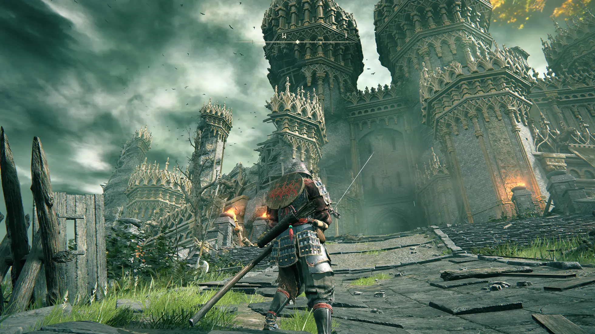

RPG de Ação




Elden Ring é um jogo de RPG de ação (action-RPG) que foi um fenômeno desde o seu lançamento em 2022. Desenvolvido pela FromSoftware, o mesmo estúdio por trás da aclamada série Dark Souls, e com a colaboração do famoso escritor George R. R. Martin (autor de "As Crônicas de Gelo e Fogo"), o jogo levou o gênero a um novo patamar, conquistando prêmios como Jogo do Ano e o coração de milhões de jogadores. O jogo se passa nas Terras Intermédias, um vasto mundo de fantasia sombria, repleto de paisagens deslumbrantes, mas também perigosas, como castelos imponentes, pântanos venenosos e masmorras secretas. Ao contrário de seus antecessores, Elden Ring oferece um mundo aberto gigantesco que você pode explorar com total liberdade, a pé ou montado em sua montaria espectral, o Torrente.
A jogabilidade de Elden Ring é o ponto central da sua experiência e o que o diferencia de outros jogos. Ela combina a dificuldade desafiadora e a profundidade de combate dos jogos da FromSoftware (como a série Dark Souls) com a liberdade de exploração de um mundo aberto. Liberdade e Exploração em um Mundo Aberto Ao contrário dos jogos anteriores da FromSoftware, que eram mais lineares, Elden Ring se passa no vasto mundo das Terras Intermédias. Você tem a liberdade de ir para onde quiser desde o início. Se um inimigo ou chefe for muito difícil, você pode simplesmente ir para outra direção, explorar outras áreas e masmorras, e voltar mais forte e mais bem equipado. O mundo é cheio de segredos, cavernas, ruínas e masmorras opcionais, cada uma com seus próprios desafios e recompensas, como equipamentos, feitiços e habilidades. A montaria espectral, Torrente, é essencial para atravessar grandes distâncias, e a habilidade de pular (inexistente em Dark Souls) permite alcançar áreas antes inacessíveis, adicionando uma camada vertical à exploração.